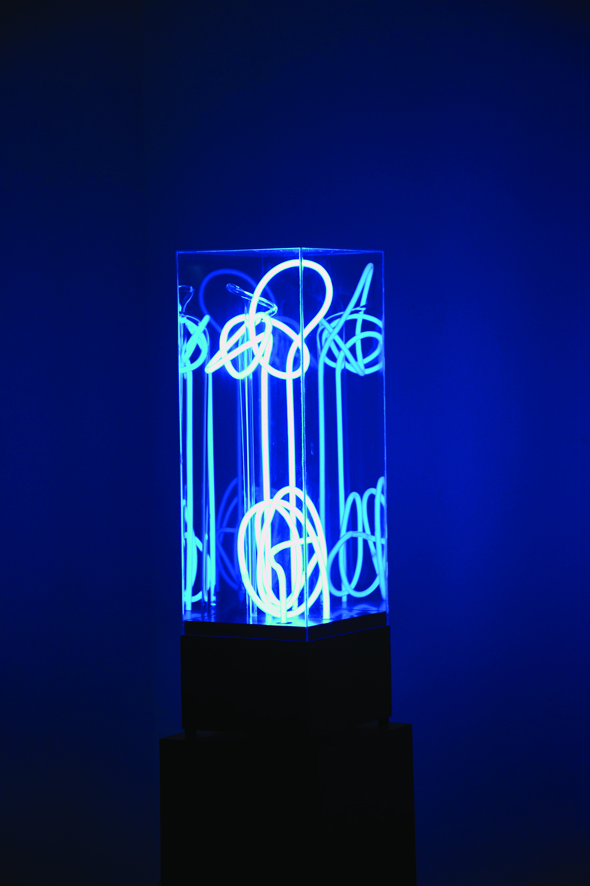
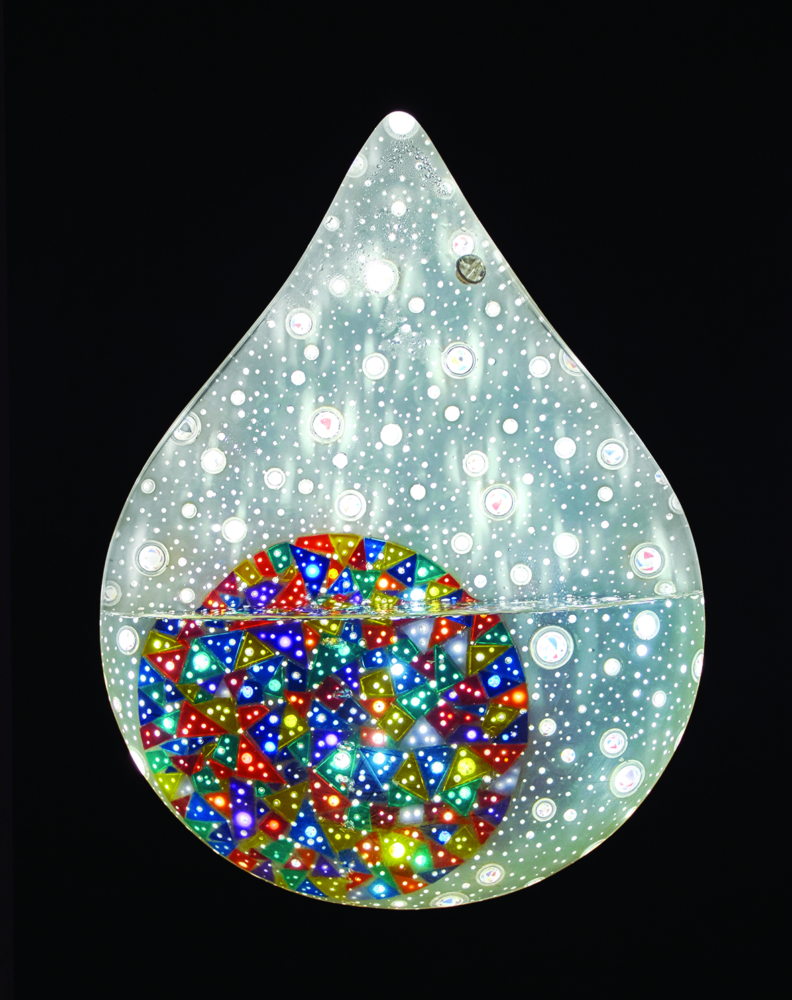
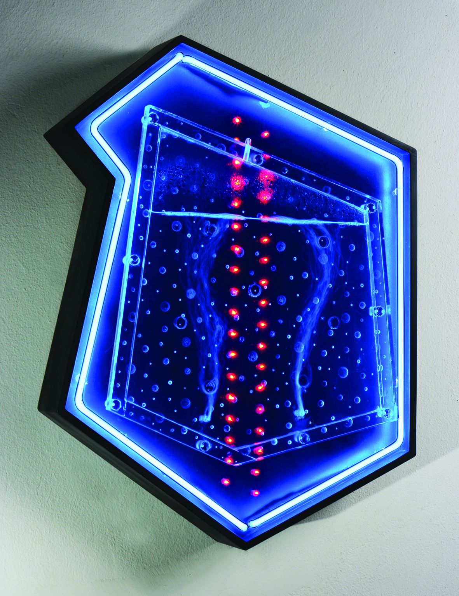
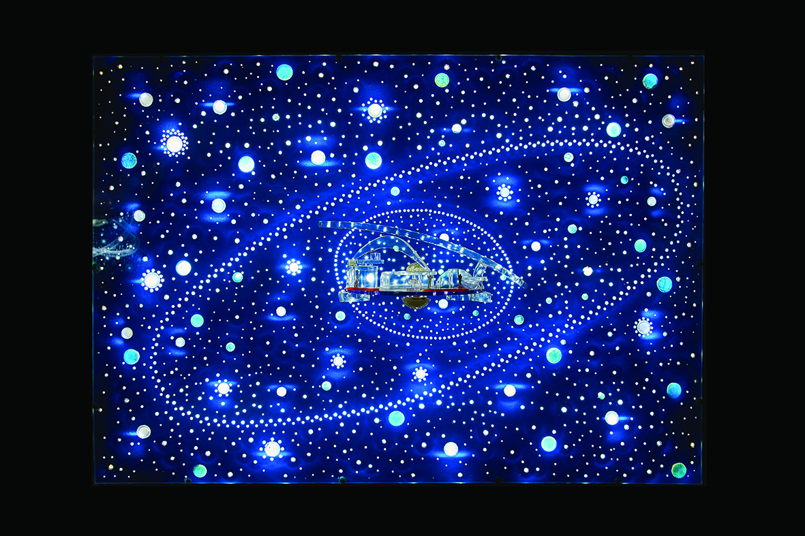
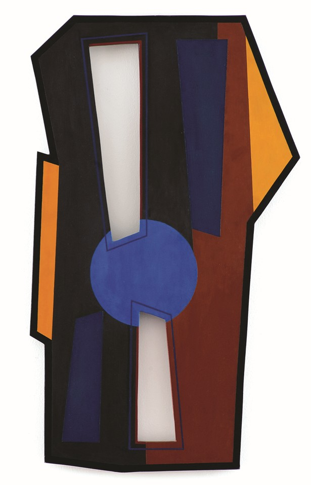

Sobre la muestra
El concepto de tiempo real en el campo de las artes remite a aquellas prácticas cuyos procesos de acción y recepción se corresponden temporalmente: las transformaciones experimentadas por las obras coinciden sincrónicamente con el tiempo del público. En lugar de representar acontecimientos pasados o construir ficciones diferidas, el arte en tiempo real sucede en el mismo momento en que es experimentado. La obra se actualiza en cada instante y el gesto artístico deviene en el propio comportamiento de la pieza. El foco en la dimensión objetual de la obra se desplaza, así, hacia la pura experiencia temporal y se percibe, por ejemplo, en el carácter efímero de la propuesta estética, en las lógicas procesuales, en la participación activa por parte del público, en la impermanencia de las obras, o en su consecuente inestabilidad.
La temprana incursión de Kosice en la creación de obras en tiempo real no constituye un gesto secundario, sino que entraña un impulso sostenido por explorar los límites y las posibilidades de la materia, la energía y la percepción. Ya en la década del veinte del siglo pasado, algunos de los artistas que influyeron marcadamente en la obra kosiceana hacían alusión a la dimensión temporal, a la idea de los materiales como portadores de fuerzas y a la inclusión del público en las obras. En el Manifiesto Constructivista de 1920, Naum Gabo y Antoine Pevsner defendieron los ritmos cinéticos como “formas basilares de nuestra percepción del tiempo real” , e incitaron así a erradicar los ritmos estáticos como elementos únicos y privilegiados en las artes plásticas. Cuatro años más tarde, László Moholy-Nagy y Alfred Kemény promovieron el reemplazo de la construcción material estática por una construcción dinámica, cuyos funcionarían como “transportadores de energía”; escribieron que en los “sistemas dinámico-constructivos de fuerzas” , el ser humano hasta entonces pasivo podría experimentar una intensificación de sus propias facultades, hasta convertirse en un socio activo de las fuerzas que se despliegan.
Es a través de la dimensión de tiempo real que Kosice articula las búsquedas de las primeras vanguardias —la integración arte/vida, la incorporación de materiales heterodoxos, la construcción de imaginarios utópicos— con preocupaciones que poco a poco definirán la esfera de aquello que la historiografía más tarde designará como arte contemporáneo: la participación activa del público, la obsolescencia y variabilidad de la obra a lo largo del tiempo, la generatividad, la primacía de la experiencia sobre el objeto cerrado y terminado, y la libre combinación de materiales físicos y tangibles hasta el momento ajenos al ámbito de las artes, entre ellos agua y plásticos, con materialidades inasibles como electrones, fotones y bits.
Esta exposición reúne un conjunto de obras de Kosice, desarrolladas a lo largo de su prolífica producción artística, que demuestran distintas configuraciones de la categoría de tiempo real. En todos los casos, el tiempo deja de ser concebido como un marco externo o subsidiario para devenir en sustancia viva. La dimensión temporal se convierte en una fuerza activa, donde confluye el comportamiento de la obra con la instancia de su recepción, signada por la experiencia del público. Kosice inaugura así una sensibilidad que trasciende la objetualidad moderna para abrir paso a una noción de obra como organismo temporal, un campo de relaciones y tensiones en el que la acción resiste a ser fijada; simplemente fluye como el agua y es allí donde la obra acontece.
------------------- ------------------- ------------------- ------------------- ------------------- ----------
1 Gabo, N. y Pevsner, A. (1920). “Manifiesto Constructivista”. En De Micheli, M. (1979). Las vanguardias artísticas del siglo XX. Madrid: Alianza Forma.
2 Moholy-Nagy, L. y Kemény, A. (1924). “Sistema Constructivo-Dinámico-Fuerza”. En Calvo Serraller, F., González García, A. y Marchan Fiz, S. (2009). Escritos de Vanguardia 1900/1945. Madrid: Akal
Detalles
Curaduría: Jazmín Adler
Lugar: Museo Municipal de Bellas Artes Juan B. Castagnino, Rosario, Argentina.
Fecha: Del 30 de abril al 17 de agosto, 2026
Horarios y Visitas
Horarios del Museo
- Martes a Viernes: 13:00 - 19:00 hs
- Sábados y Domingos: 10:00 - 19:00 hs
- Feriados: 10:00 - 19:00 hs
Visitas Acompañadas
- Miércoles a Viernes: 17:00 hs
- Sábados y Domingos: 11:00 y 17:00 hs
- Feriados: 11:00 y 17:00 hs
Obras en Exhibición

Escultura lumínica gas neón (2005)
Colección Fundación Kosice.

Gota de agua móvil con círculos (2007)
Colección Museo Kosice.

Homenaje a Moholy-Nagy (2009)
Colección Museo Kosice.

La Ciudad Hidroespacial en la constelación de Vivian (2009)
Colección Museo Kosice.

Móvil de luz (1988)
Colección Museo Kosice.

Dos espacios (1949)
Colección Castagnino+macro.
El Artista
.webp)
Gyula Kosice
Kosice, 1924 - Buenos Aires, 2016
Nació con el nombre de Ferdinand Fallik, el 26 de abril de 1924 en el seno de una familia húngara, sin embargo, tomó por nombre el de su ciudad natal, Kosice, un modo de recordarla para siempre. “Kosice”, a secas, así prefería que lo llamaran. Llegó al país a los cuatro años de edad, en 1928, y más tarde se naturalizó como argentino. Estudió dibujo y modelado en academias de cursos libres, y asistió por un período breve de tiempo a la Escuela de Bellas Artes Manuel Belgrano.
En 1944 creó Röyi, , la primera escultura articulada y móvil de Latinoamérica. Ese mismo año integra el grupo editor de la revista Arturo –que proponía un arte de pura invención, no figurativo–, en la que publicó tanto textos teóricos como poemas. En octubre de 1945 participó en una exposición en la casa del psicoanalista Enrique Pichon-Rivière y, en diciembre, en la casa de la fotógrafa Grete Stern.
En 1946 funda el Arte Madí, lo nombra y escribe su manifiesto. Propone la creación e invención totales, liberando al arte de todas las ataduras. Fue un gran impulsor de esa agrupación, organizó numerosas exposiciones y contribuyó a su difusión internacional. Fundó y dirigió la revista Arte Madí Universal, de la que editó ocho números. En 1948 fue invitado a exponer obras del grupo en el Salon des Réalités Nouvelles de París, lo que llevó a Madí a consagrarse a nivel internacional.
Atraído por el uso de nuevos materiales, Kosice experimentó con plexiglás, vidrio y tubos de gas de neón. Más adelante, a su interés por el movimiento, le sumó el uso del agua y empezó a hacer esculturas hidrocinéticas. A partir de su afirmación “El hombre no ha de terminar en la tierra”, que realizó en la revista Arturo, a comienzos de los años setenta creó la Ciudad Hidroespacial, un proyecto urbanístico, artístico y poético que propone hábitats suspendidos en el aire a partir de la energía contenida en el agua. La mayor parte de esta obra se encuentra hoy en el Museum of Fine Arts of Houston.
Atraído por el uso de nuevos materiales, Kosice experimentó con plexiglás, vidrio y tubos de gas de neón. Más adelante, a su interés por el movimiento, le sumó el uso del agua y empezó a hacer esculturas hidrocinéticas. A partir de su afirmación “El hombre no ha de terminar en la tierra”, que realizó en la revista Arturo, a comienzos de los años setenta creó la Ciudad Hidroespacial, un proyecto urbanístico, artístico y poético que propone hábitats suspendidos en el aire a partir de la energía contenida en el agua. La mayor parte de esta obra se encuentra hoy en el Museum of Fine Arts of Houston.
"Si la obra de arte, si mi obra de arte no habla, entonces no valgo nada; la obra tiene que hablar por sí misma, a través de su presencia y su creación... El peor que le puede pasar a una artista es alimentar permanentemente su ego; debe poder consolidar una cierta humildad para que ello permita alcanzar una difusión del más alto nivel, lo que significa llegar al pueblo, a los otros."
Hizo cincuenta exposiciones individuales e integró más de 500 muestras colectivas. Así como también publicó 18 libros.
Sus obras figuran en museos y colecciones privadas de Argentina, de Latinoamérica, de Estados Unidos, de Europa y de Asia.
Murió el 25 de mayo de 2016, a los 92 años, en la Ciudad de Buenos Aires.